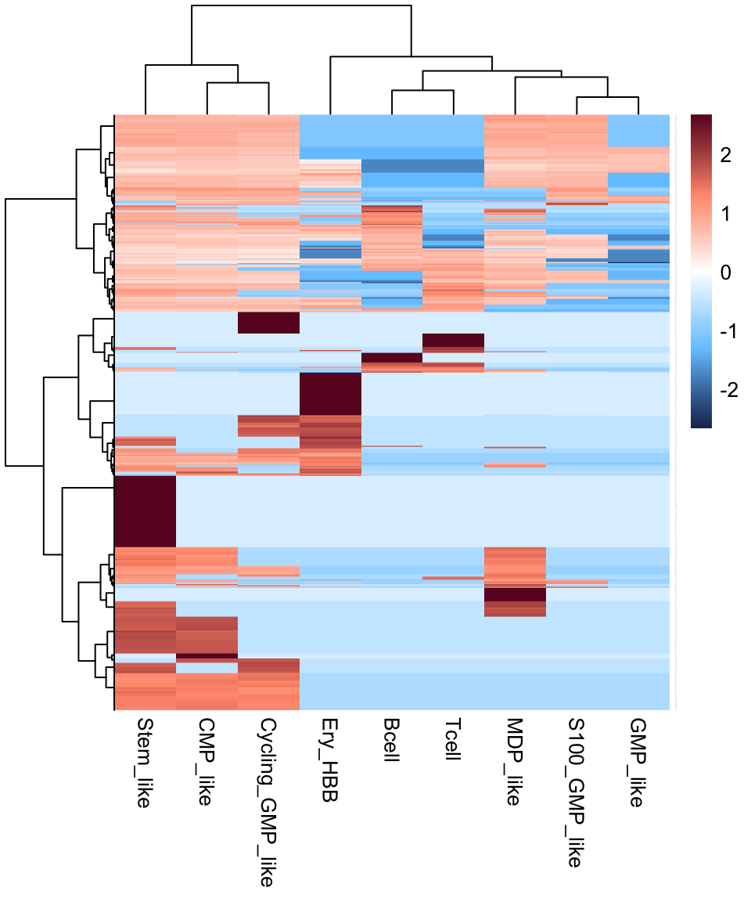

Chapter 2 scRNA-seq
2.1 Load packages
suppressMessages({
library(dplyr)
library(e1071)
library(pheatmap)
library(ggplot2)
library(DESeq2)
library(openxlsx)
library(dendextend)
library(matrixStats)
library(ggpubr)
library(limma)
library(randomForest)
library(clusterProfiler)
library(genefilter)
library(GSVA)
library(Biobase)
library(org.Hs.eg.db)
library(ggplot2)
library(ggthemes)
library(enrichplot)
library(GSEABase)
library(Seurat)
library(monocle)
})2.2 Pre-processing
# Pre-processing data was performed using cellranger
cellranger count --id=${Sample_ID} \
--fastqs=${FASTQ} \
--sample=${Sample_ID}\
--transcriptome=${index_path}
# The single-cell based count matrix was generated and merged using Seurat
apl <- CreateSeuratObject(counts = apl.data, project = "apl", min.cells = 0, min.features = 0)
apl[["percent.mt"]] <- PercentageFeatureSet(apl, pattern = "^MT-")2.3 Quaility control
# Pre-processing data was performed using Seurat
apl <- subset(apl, subset = nFeature_RNA > 300 & percent.mt < 10 & nCount_RNA < 30000 & nCount_RNA > 500 & Doublet == FALSE )2.4 Clustering
# The dimensionality reduction and clustering were performed using Seurat.
apl <- NormalizeData(apl, normalization.method = "LogNormalize", scale.factor = ncol(apl) )
apl <- FindVariableFeatures(apl, selection.method = "vst", nfeatures = 3000)
# Identify the 10 most highly variable genes
top10 <- head(VariableFeatures(apl), 10)
# Scale data
apl <- ScaleData(apl, features = VariableFeatures(apl))
apl <- RunPCA(apl, features = VariableFeatures(object = apl))
# Batch effect adjustment
apl <- RunHarmony(apl, "Sample", max.iter.harmony = 5)
apl <- FindNeighbors(apl, reduction = "harmony", dims = 1:30)
apl <- FindClusters(apl, resolution = 1)
apl <- RunTSNE(apl, reduction = "harmony", dims = 1:30, perplexity = 50)
apl <- RunUMAP(apl, reduction = "harmony", dims = 1:30)2.5 Cell annotation
We use SingleR to provide cell type annotation.
ref <- readRDS(file = "SingleR/hs.BlueprintEncodeData.RDS")
pred.BlueprintEncodeData <- SingleR(test = apl@assays$RNA@data, ref = ref, labels = ref$label.main)
ref <- readRDS(file = "SingleR/hs.HumanPrimaryCellAtlasData.RDS")
pred.HumanPrimaryCellAtlasData <- SingleR(test = apl@assays$RNA@data, ref = ref, labels = ref$label.main)
ref <- readRDS(file = "SingleR/ImmGenData.RDS")
pred.ImmGenData <- SingleR(test = apl@assays$RNA@data, ref = ref, labels = ref$label.main)
ref <- readRDS(file = "SingleR/MonacoImmuneData.RDS")
pred.MonacoImmuneData <- SingleR(test = apl@assays$RNA@data, ref = ref, labels = ref$label.main)
ref <- readRDS(file = "SingleR/NovershternHematopoieticData.RDS")
pred.NovershternHematopoieticData <- SingleR(test = apl@assays$RNA@data, ref = ref, labels = ref$label.main)2.6 Cell signature
The cell signature matrix for each branch in APL was generated using CIBERSORTx (https://cibersortx.stanford.edu/runcibersortx.php)
apl.signature <- read.table("data/CIBERSORTx_sig_1w_branch_mix_out.txt", header = T, row.names = 1)
apl.signature %>% dim()## [1] 3388 9apl.signature %>% head()
pheatmap(as.matrix(apl.signature), scale = "row",
color = colorRampPalette(c("#1B3361","#76C7FF","#FFFFFF","#FF987A","#6A0D28"))(501),
cluster_row = T, cluster_col = T, border_color = NA,
clustering_distance_rows = "manhattan",
clustering_distance_cols = "manhattan",
clustering_method = "ward.D",
fontsize_col = 10,
fontsize_row = 0.1)